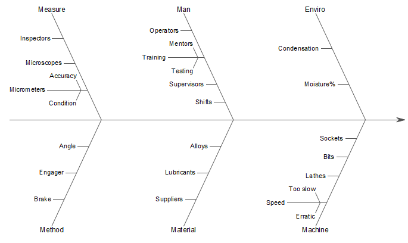

Wählen Sie mindestens zwei Textspalten aus, um ein Ursache-Wirkungs-Diagramm (auch bezeichnet als Fischgräten- oder Ishikawa-Diagramm) zu erstellen.
Wählen Sie die gewünschten Daten aus.
Wählen Sie im Menü Zeichnen > Statistisch: Ursache-Wirkungs-Diagramm, um den Dialog plot_causeeffect zu öffnen.
| Datenform |
Es gibt zwei Datenstrukturen, die von diesem Diagramm unterstützt werden:
|
|---|---|
| Haupt | Wählen Sie eine Spalte für die Hauptursachen aus, wenn Datenform auf Haupt- und untergeordnete Spalten gesetzt ist. |
| Untergeordnet | Wählen Sie eine Spalte für die untergeordneten Ursachen aus, wenn Datenform auf Haupt- und untergeordnete Spalten gesetzt ist. |
| Ursachen | Wählen Sie alle Ursachenspalten als Ursachen aus, wenn Datenform auf Jede Ursache in separater Spalte gesetzt ist. |
| Wirkung | Geben Sie die Beschriftung für die Wirkung oder das Problem ein, das Sie optional versuchen zu lösen. |
| Vorlage | Per Standard ist die Standardvorlage "CauseEffect" ausgewählt. Sie können das Kontrollkästchen Auto deaktivieren, um eine benutzerdefinierte Vorlage zu wählen. |
| Ausgabezeichnungsdaten | Legen Sie fest, wo die Zeichnungsdaten ausgegeben werden sollen. Die Zeichnungsdaten werden als Haupt- und untergeordenete Spalten angeordnet. |
CauseEffect.otpu (installiert im Origin-Programmordner)
Ein Ursache-Wirkungs-Diagramm ist ein visuelles Tool, da bei der Identifikation und Organisation potenzieller Ursachen eines Problems oder einer Wirkung unterstützt. Es ist auch bekannt unter den Bezeichnungen Fischgräten- oder Ishikawa-Diagramm. Es wird in vielen Branchen verwendet, um die Grundursachen von Problemen zu identifizieren.
Das Diagramm ähnelt einem Fischskelett: Der "Kopf" ist das spezifische Problem oder die Wirkung, die Sie lösen bzw. ändern möchten. Das "Rückgrat" ist eine zentrale horizontale Linie, die auf das Problem zeigt. Die "Gräten" sind die Hauptkategorien der potenziellen Ursachen, die vom Rückgrat ausgehen. Die kleineren Knochen sind die spezifische Ursachen und Sub-Ursachen, die von den Kategoriegräten ausgehen.
Die Kategorien können basierend auf dem Kontext und der Natur des Problems variieren. Zum Beispiel:
Um das Diagramm benutzerdefiniert zu zeichnen, gehen Sie zu den unteren Registerkarten im Dialog Details Zeichnung.